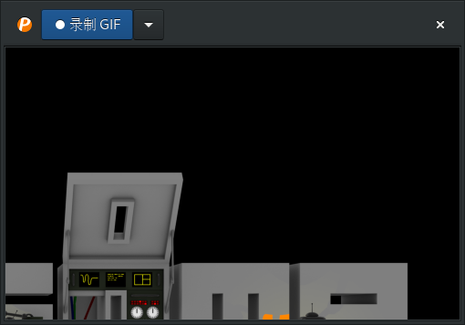
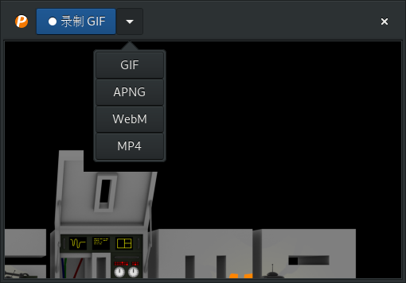

peek:一款简易的gif录屏软件
一直以来在linux上录制Gif动画对我来说都是一件很麻烦的事情,我需要先录制一段视频，然后再转换成gif，整个过程还超级慢。
直到我发现了 peek. peek 是一款非常简易的录屏软件，它的功能也十分单一，就是录制指定区域的屏幕。
而且你必须手工调整它的录制区域，而无法直接指定录制全屏或者指定录制哪个窗口的内容。
虽然功能单一，但是应付一般的需求也足够了。
安装
在archlinux下可以直接通过pacman来安装
sudo pacman -S peek --noconfirm
resolving dependencies...
looking for conflicting packages...
Packages (1) peek-1.3.1-1
Total Download Size: 0.16 MiB
Total Installed Size: 0.58 MiB
:: Proceed with installation? [Y/n]
:: Retrieving packages...
peek-1.3.1-1-x86_64 0.0 B 0.00B/s 00:00 [----------------------] 0%
peek-1.3.1-1-x86_64 159.5 KiB 1139K/s 00:00 [######################] 100%
(0/1) checking keys in keyring [----------------------] 0%
(1/1) checking keys in keyring [######################] 100%
(0/1) checking package integrity [----------------------] 0%
(1/1) checking package integrity [######################] 100%
(0/1) loading package files [----------------------] 0%
(1/1) loading package files [######################] 100%
(0/1) checking for file conflicts [----------------------] 0%
(1/1) checking for file conflicts [######################] 100%
(0/1) checking available disk space [----------------------] 0%
(1/1) checking available disk space [######################] 100%
:: Processing package changes...
(1/1) installing peek [----------------------] 0%
(1/1) installing peek [######################] 100%
Optional dependencies for peek
gst-plugins-good: Recording under Gnome Shell
gst-plugins-ugly: MP4 output under Gnome Shell
gifski: High quality GIF animations with thousands of colors
:: Running post-transaction hooks...
(1/4) Compiling GSettings XML schema files...
(2/4) Updating icon theme caches...
(3/4) Arming ConditionNeedsUpdate...
(4/4) Updating the desktop file MIME type cache...
使用
peek的使用方法也非常简单，它的界面上只有一个按钮，那就是 录制Gif按钮
 同时它的下面有一个空心的窗口，这个窗口的范围就是peek录屏的范围。
之所以说它是个空心的窗口而不是透明的窗口，是因为你可以在这个窗口的范围内操作下面的桌面。
所以，你需要做的就是先调整peek窗口的大小，让它下面的空心窗口涵盖要录屏的范围。
然后点击上面的 录制GIF. 这是按钮变成了红色的"停止"按钮。
然后在空心的窗口内做任何操作，再点击"停止"按钮，就行了。
值得一提的是， peek 事实上也支持录制成其他的视频格式，点击 录制GIF 右边的向下箭头更改要录制的格式就好了。
